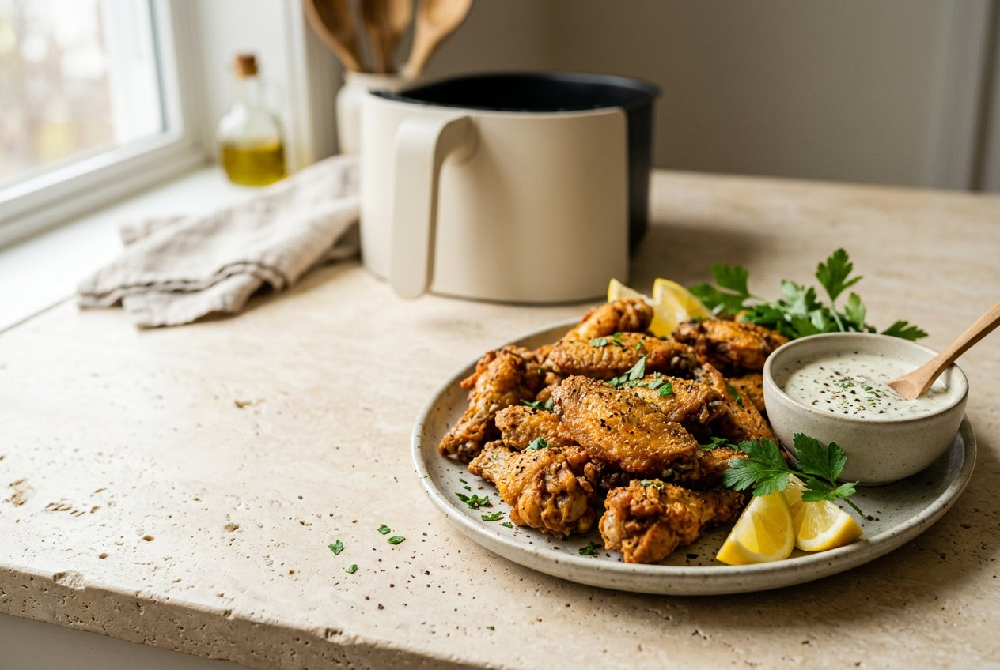

Air Fryer Recipe

Air fryer quick guide
Preheat only if your appliance or recipe calls for it. Timing can vary by model and portion size.
Gather these
Ingredients
The method
How to make it
A few useful details
Tips for the best results
Make it yours
Variations
If you need a swap
Useful substitutions
How to store leftovers
How to reheat
Good to know
Frequently asked questions
Save this one
Air Fryer Recipe
Ingredients
Instructions
Notes